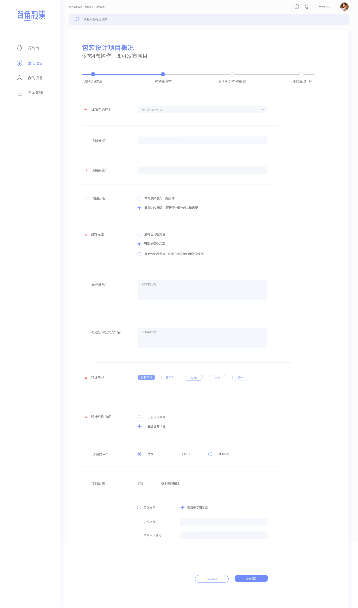

B端页面
以下都是个人的观点和不明确的地方，这个页面用于记录问题1. 需求方账号控制台中现在显示有我的评价、星级、类型和信誉度。
(1) 需求方是否需要经常使用我的评价功能？（反之创意方应该对应的是我收到的评价）
(2) 如果需要经常查看评价，那么用户应该最想看的是我收到的评价，而不是我的评价
(3) 需求方是否有星级方面的限制？比如说低星用户不可以发布项目
(4) 如不可发布项目，页面中应有对应的提示
(5) 如没有星级方面的限制，建议去除显示星级功能
(6) 类型和信誉度同上
2. 待处理动态是否只能显示4个？如可以有多个建议添加一个翻页按钮
(1) 如果没有待处理信息显示什么？（新闻活动信息同理）
3. 发布需求后，进入AE待审核阶段，这个阶段用户是否可以自行修改需求？还是只能联系AE改？
(1)我看页面在审核阶段就已经生成了项目时间周期，如果由于审核时间长而导致这个时间不准确，我们是否还要显示这个
(2)已审核阶段，右上角的项目进程应该变为款项托管
(3)右上角的开始时间文言比较怪异
(4)待审核阶段要看到确认并支付按钮，但是按钮呈现灰色无法点击，并且旁边会有提示信息
------关于首页的展示页的先跳过
关于设计师已上传初稿都不满意按钮的位置想要调整一下
阶段文件，待设计师上传是否需要取消
用户选择都不满意会有一个提醒，只能修改的次数，确认修改时让他谨慎修改
方案的解释说明内容有点少（是否有可以查看详情等功能）
修改成功之后要得到一个结果，在之前都不满意按钮处可以出现联系AE按钮
个人中心页面中编辑右边的下拉图标不知道是什么
个人中心头像上传，提示用户点击头像上传图片，而不是有一个重新上传按钮，会好一些吧
匹配的时候能否进入设计师详情？
设计师项目和客户评价会出现更多 按钮
填写需求中上面的流程少了一步AE审核

未发布状态是否添加一键发布功能
在我的项目中，排列顺序为：进行中的项目、未发布的项目、已完成的项目
如果没有则不显示，进入项目详情并不是点击上面的按钮而是只要点击这个项目就能进入，所以建议取消按钮
确认源文件无误的提示弹窗要告知事情的严重性，而且不能只有完成，还要有取消按钮（确认和取消）
需要给出相应的告知、一定要告知
项目评价太小了，我知道这个页面是项目评价都得找半天，建议弹窗提示、或者确认后自动跳转到评价页面
源文件待确认页面，现在原型显示有三个方案的终稿，设计师出的终稿简略图究竟是几张？
还是说页面不显示终稿，直接把源文件通过邮件的形式发送给需求方，等待确认？
有一点不理解，咱们到底有没有AE待审核的阶段？
我认为终稿待上传的阶段还是需要让用户看到初稿的，要始终有图片可以看到
包括在终稿上传后的阶段是否也需要用户看到初稿的内容？毕竟两个稿件时间隔了有点旧了，人会忘的嘛